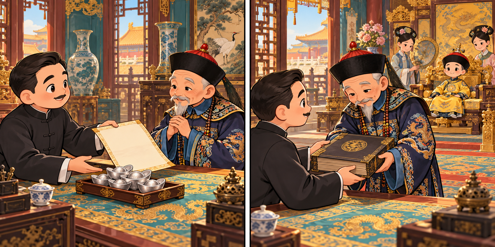
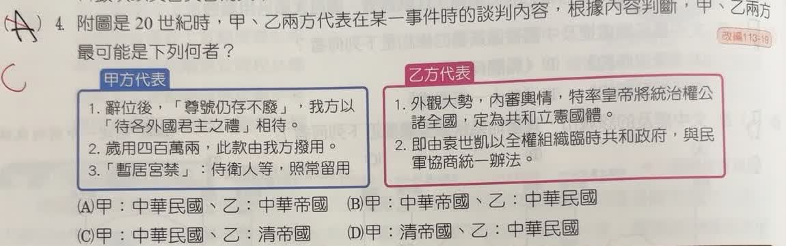

分享原卷｜第 4 題
完整原題
作答所需文章／材料
【甲方代表】 1. 辭位後，「尊號仍存不廢」，我方以「待各外國君主之禮」相待。 2. 歲用四百萬兩，此款由我方撥用。 3. 「暫居宮禁」：侍衛人等，照常留用。 【乙方代表】 1. 外觀大勢，內審輿情，特率皇帝將統治權公諸全國，定為共和立憲國體。 2. 即由袁世凱以全權組織臨時共和政府，與民軍協商統一辦法。附圖是20世紀時，甲、乙兩方代表在某一事件時的談判內容，根據內容判斷，甲、乙兩方最可能是下列何者？
(A) 甲：中華民國、乙：中華帝國
(B) 甲：中華帝國、乙：中華民國
(C) 甲：中華民國、乙：清帝國
(D) 甲：清帝國、乙：中華民國
先想一想，再查看答案、解說與原圖
原卷作答：A
正確答案：C。民國一方提出退位後的優待條件，清廷一方宣布交出統治權、接受共和。
逐項解析
| 選項與原句 | 判讀 | 句意與判斷理由 |
|---|---|---|
| (A) 甲：中華民國、乙：中華帝國 | 不選 | 甲正確，但乙交出清帝統治權，不是後來袁世凱的中華帝國。 |
| (B) 甲：中華帝國、乙：中華民國 | 不選 | 甲是提出退位優待的民國一方，乙是清廷，兩者均不相符。 |
| (C) 甲：中華民國、乙：清帝國 | 應選 | 民國一方提出退位後的優待條件，清廷一方宣布交出統治權、接受共和。 |
| (D) 甲：清帝國、乙：中華民國 | 不選 | 把承諾優待與交出皇帝統治權的雙方顛倒了。 |
詳細說明與解題步驟
一、先看雙方各在做什麼
甲說你退位後，我們出錢、保留尊號與侍衛待遇，屬提出清室優待條件的一方。乙說率皇帝交出統治權、定為共和，顯然是皇帝所在的清廷一方。
二、這是1912年清帝退位的背景
甲是中華民國，乙是清帝國，選C。題目出現袁世凱，是因他參與政權交接，不代表每次提到袁都要選中華帝國。
三、清帝國與中華帝國不同
清帝國指清朝，退位皇帝是溥儀；中華帝國則是袁世凱後來企圖恢復帝制的名號，兩者不能混用。原選A就是把乙的國名混淆。
四、保留尊號不等於保留統治權
優待退位皇室的生活與稱號，不等於皇帝仍有治理國家的最高權力。判斷共和與帝制，應看統治權，而不是只看到皇帝尊號。

核對註記：已核對題幹、全部選項與必要材料；教材對應課次未確認，歸綜合。
原圖（僅本題）
